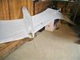

La Fête du CVCF a lieu cette année indépendamment d'une fête de Club, ça complique un peu la gestion, il faut être sur place,et François Périault a dû faire quelques allers-retours... Mais les tenants du Parc du Papillon de la Pree avaient l'air assez heureux de notre venue et la Municipalité nous a monté un barnum avec l'électricité. Le Site est étendu et magnifique !
La Fête du CVCF a lieu cette année indépendamment d'une fête de Club, ça complique un peu la gestion, il faut être sur place,et François Périault a dû faire quelques allers-retours... Mais les tenants du Parc du Papillon de la Pree avaient l'air assez heureux de notre venue et la Municipalité nous a monté un barnum avec l'électricité. Le Site est étendu et magnifique ! Il se situe sur le haut d'une colline dont Mr le Député-Maire nous a conté l'histoire... D'abord terrain agricole souvent inondé, le cultivateur a eu l'autorisation de le remblayer pour le remonter, il a confié cela à une société qui en a fait un dépôt d'ordure, contrat juteux pour elle. Mais le Député-Maire, quand il est arrivé, y a mis le holà et après maints obstacles juridiques et politiques, il est parvenu à ses fins. Il a fait remettre de la terre sur le dessus, assez pour cultiver, mais un peu juste pour planter des arbres.
Il se situe sur le haut d'une colline dont Mr le Député-Maire nous a conté l'histoire... D'abord terrain agricole souvent inondé, le cultivateur a eu l'autorisation de le remblayer pour le remonter, il a confié cela à une société qui en a fait un dépôt d'ordure, contrat juteux pour elle. Mais le Député-Maire, quand il est arrivé, y a mis le holà et après maints obstacles juridiques et politiques, il est parvenu à ses fins. Il a fait remettre de la terre sur le dessus, assez pour cultiver, mais un peu juste pour planter des arbres. Il n'y a d'arbres que sur les pentes, et encore, des taillis pas très élevés. La plantation de quelques arbres est prévue, mais il faut pour chacun creuser une grande fosse de 5 m et la remplir de bonne terre. Les arbres seront favorables aux animaux du Parc, en général en liberté mais qui crèvent de chaud en été !
Il n'y a d'arbres que sur les pentes, et encore, des taillis pas très élevés. La plantation de quelques arbres est prévue, mais il faut pour chacun creuser une grande fosse de 5 m et la remplir de bonne terre. Les arbres seront favorables aux animaux du Parc, en général en liberté mais qui crèvent de chaud en été ! Les chevaux sont magnifiques et de belle taille. Quand il fait froid, ils piquent des galops à travers le Parc. Ils viennent aussi voir, mais pas de trop près, quand les cervolistes agitent des choses bizarres !
Les chevaux sont magnifiques et de belle taille. Quand il fait froid, ils piquent des galops à travers le Parc. Ils viennent aussi voir, mais pas de trop près, quand les cervolistes agitent des choses bizarres ! Au fond là-bas, on voit Roissy Charles de Gaulle, ou plutôt on le verrait si le temps n'était pas aussi brumasseux ! Mais on entend les avions passer pas très loin, sans être gênant, même pour dormir la nuit.
Au fond là-bas, on voit Roissy Charles de Gaulle, ou plutôt on le verrait si le temps n'était pas aussi brumasseux ! Mais on entend les avions passer pas très loin, sans être gênant, même pour dormir la nuit. Au plus haut du Parc, une ferme pédagogique où les enfants viennent faire connaissance avec les animaux qu'ils ne connaissent souvent pas du tout... Un petit train touristique les amène de la grille en bas jusqu'à l'allée de la Ferme...
Au plus haut du Parc, une ferme pédagogique où les enfants viennent faire connaissance avec les animaux qu'ils ne connaissent souvent pas du tout... Un petit train touristique les amène de la grille en bas jusqu'à l'allée de la Ferme... Un grand Barnum a été dressé pour nous accueillir avec un tableau électrique car quelques véhicules fourgons et camping-cars ont été tolérés pour passer la nuit ici ! En nombre limité quand même et il fallait s'inscrire d'avance, prudence normale car la place est guettée par les gens du voyage. Normalement, les cervolistes devaient monter leur matériel en voiture et redescendre celle-ci en bas, mais nous n'étions pas très nombreux et on est en France...
Un grand Barnum a été dressé pour nous accueillir avec un tableau électrique car quelques véhicules fourgons et camping-cars ont été tolérés pour passer la nuit ici ! En nombre limité quand même et il fallait s'inscrire d'avance, prudence normale car la place est guettée par les gens du voyage. Normalement, les cervolistes devaient monter leur matériel en voiture et redescendre celle-ci en bas, mais nous n'étions pas très nombreux et on est en France... La ferme dispose d'un petit bâtiment en dur et en bois au centre de sa basse-cour ! Elle s'était décorée car une sorte de Marché de Noël (dont nous faisions plus ou moins partie) se tenait à sa porte ce week-end.
La ferme dispose d'un petit bâtiment en dur et en bois au centre de sa basse-cour ! Elle s'était décorée car une sorte de Marché de Noël (dont nous faisions plus ou moins partie) se tenait à sa porte ce week-end. A l'intérieur, une horloge Comtoise assez ancienne, et divers présentoirs en particulier celui d'un spécialiste des oiseaux qui est venu faire de l'information sur les oiseaux des jardins, leurs espèces, leurs moeurs, les mangeoires, etc !
A l'intérieur, une horloge Comtoise assez ancienne, et divers présentoirs en particulier celui d'un spécialiste des oiseaux qui est venu faire de l'information sur les oiseaux des jardins, leurs espèces, leurs moeurs, les mangeoires, etc ! Dans la basse-cour, une mare aux canards avec au moins un canard mandarin !
Dans la basse-cour, une mare aux canards avec au moins un canard mandarin ! Sur la rambarde, un paon, mais il n'a plus une plume sur la queue ! Arrachées par les poules, ou volées par des visiteurs ?
Sur la rambarde, un paon, mais il n'a plus une plume sur la queue ! Arrachées par les poules, ou volées par des visiteurs ? Une petite carriole de travail pas ancienne, évidemment !
Une petite carriole de travail pas ancienne, évidemment ! Les poules se promènent partout, le paillage des groseilliers les empêche de transformer le terrain en bourbier (quand les "nids-de-poules" se rejoignent) à force de gratter, comme dans les poulaillers classiques...
Les poules se promènent partout, le paillage des groseilliers les empêche de transformer le terrain en bourbier (quand les "nids-de-poules" se rejoignent) à force de gratter, comme dans les poulaillers classiques...  Les oies ont leur terrain, bien clos car sinon elles attaquent les visiteurs, comme ici la plus proche qui me défie la tête haute et en criant !
Les oies ont leur terrain, bien clos car sinon elles attaquent les visiteurs, comme ici la plus proche qui me défie la tête haute et en criant ! Sur son poteau un coq Cayenne (une race naine) qui s'est grandi fièrement !
Sur son poteau un coq Cayenne (une race naine) qui s'est grandi fièrement ! Les chevaux ne sont pas très dérangés par les cervolistes, ils doivent avoir l'habitude. De temps en temps, ils s'approchent, soutenant le meneur de la horde... L'un d'eux a même touché le fil de François, mais il a vite bondi hors d'atteinte !
Les chevaux ne sont pas très dérangés par les cervolistes, ils doivent avoir l'habitude. De temps en temps, ils s'approchent, soutenant le meneur de la horde... L'un d'eux a même touché le fil de François, mais il a vite bondi hors d'atteinte ! Avant le déjeuner, la municipalité a offert un petit apéritif sous un des barnums encore inoccupé du Marché de Noël qui aura lieu demain. Nous avons pu beaucoup discuter avec Mr le député-maire, très accessible !
Avant le déjeuner, la municipalité a offert un petit apéritif sous un des barnums encore inoccupé du Marché de Noël qui aura lieu demain. Nous avons pu beaucoup discuter avec Mr le député-maire, très accessible ! François revient avec les bras chargés, la municipalité nous a même offert une caisse de Bordeaux millésimé ! Mais il n'y a pas obligation de tout boire avant le lendemain...
François revient avec les bras chargés, la municipalité nous a même offert une caisse de Bordeaux millésimé ! Mais il n'y a pas obligation de tout boire avant le lendemain... C'est un Bordeaux supérieur de 2012, et bio ! Bientôt bon à boire !
C'est un Bordeaux supérieur de 2012, et bio ! Bientôt bon à boire ! Bon, après déjeuner, les vols reprennent. Emmanuel a sorti un carré-chat, bien sûr mais en bois et coton ! En fait, il n'est pas de lui mais de Guy Gérard qui lui en a fait cadeau.
Bon, après déjeuner, les vols reprennent. Emmanuel a sorti un carré-chat, bien sûr mais en bois et coton ! En fait, il n'est pas de lui mais de Guy Gérard qui lui en a fait cadeau. Malgré ce vent faible, les cerfs-volants montent. A gauche, le Cody de François Périault, en haut le delta d'Yves Leroy et un roller de Jean-Luc (?), un peu plus bas mais quand même beaucoup plus haut, mon Oiseau Spiralier, plus bas encore le delta celtique de Claude Lebourgeois, et le Pyro blanc de Patrick L'Higuinen et sous le chat, mon Rokkaku que j'ai lancé car mon oiseau n'a pas besoin de surveillance !
Malgré ce vent faible, les cerfs-volants montent. A gauche, le Cody de François Périault, en haut le delta d'Yves Leroy et un roller de Jean-Luc (?), un peu plus bas mais quand même beaucoup plus haut, mon Oiseau Spiralier, plus bas encore le delta celtique de Claude Lebourgeois, et le Pyro blanc de Patrick L'Higuinen et sous le chat, mon Rokkaku que j'ai lancé car mon oiseau n'a pas besoin de surveillance ! Voilà mon Spiralier zoomé, regardez-le bien car avec la pluie plus tard, il est tombé dans un bois d'acacias plein d'épines qui l'ont tout déchiré lors du sauvetage...
Voilà mon Spiralier zoomé, regardez-le bien car avec la pluie plus tard, il est tombé dans un bois d'acacias plein d'épines qui l'ont tout déchiré lors du sauvetage...
Voilà ce qu'il en reste ! M'en fiche, de toute façon, la toile était vieille, j'avais dans l'idée de le refaire, je l'aimais bien, RIP. D'ailleurs, on voit que l'avant de la toile était violet à l'origine, et le bord arrière blanc... Tant qu'il volait, il portait encore gaillardement mes fanions CVCF !
Tant qu'il volait, il portait encore gaillardement mes fanions CVCF ! Dans le barnum, François a monté au mur une expo d'aérophotos et devant, une maquette montrant le principe de la photo sous cerf-volant...
Dans le barnum, François a monté au mur une expo d'aérophotos et devant, une maquette montrant le principe de la photo sous cerf-volant... Il y a aussi bien sûr un atelier pour les enfants et beaucoup voleront, je participerai un peu sur le terrain à la mise en vol, par exemple pour détromper ceux qui veulent décoller avec le vent de face, ou avec la tête en bas !
Il y a aussi bien sûr un atelier pour les enfants et beaucoup voleront, je participerai un peu sur le terrain à la mise en vol, par exemple pour détromper ceux qui veulent décoller avec le vent de face, ou avec la tête en bas ! Des modèles de dessins sont proposés aux enfants qui n'ont plus qu'à les décalquer par transparence, mais certains inventent LEUR dessin....
Des modèles de dessins sont proposés aux enfants qui n'ont plus qu'à les décalquer par transparence, mais certains inventent LEUR dessin.... Claude surpris devant la magnifique tenture de François et devant la table qui sera utilisée pour les diverses préparations culinaires !
Claude surpris devant la magnifique tenture de François et devant la table qui sera utilisée pour les diverses préparations culinaires ! Michelle la rescapée est venue participer, avec quand même une béquille pour la soutenir ! Sa fille lui a fait une visite, amenant aussi son petit fils...
Michelle la rescapée est venue participer, avec quand même une béquille pour la soutenir ! Sa fille lui a fait une visite, amenant aussi son petit fils... J'ai fait un petit tour de monoroue jusqu'en bas. En remontant, je retrouve les cerfs-volants et j'immortalise le beau chemin qui mène au champ de bataille et tout-à-fait carrossable malgré des on-dits mal renseignés (ou systématiquement dénigreurs ?) !
J'ai fait un petit tour de monoroue jusqu'en bas. En remontant, je retrouve les cerfs-volants et j'immortalise le beau chemin qui mène au champ de bataille et tout-à-fait carrossable malgré des on-dits mal renseignés (ou systématiquement dénigreurs ?) ! Sur le plateau, je roulerai (mal) jusqu'au bâtiment qui abrite les accessoires d'exploitation des ruches sises plus loin encore !
Sur le plateau, je roulerai (mal) jusqu'au bâtiment qui abrite les accessoires d'exploitation des ruches sises plus loin encore ! Les ruches sont là, après les petits arbres verts, une bien visible à gauche de l'écriteau, d'autres devant la lanière à droite !
Les ruches sont là, après les petits arbres verts, une bien visible à gauche de l'écriteau, d'autres devant la lanière à droite ! Une bonne affluence, une bonne centaine de CVs lancés ce week-end, toutes les tables sont prises, parfois !
Une bonne affluence, une bonne centaine de CVs lancés ce week-end, toutes les tables sont prises, parfois ! Au soir, quand même, le Parc se ferme aux visiteurs, on fête le 38° anniversaire du CVCF...
Au soir, quand même, le Parc se ferme aux visiteurs, on fête le 38° anniversaire du CVCF... Les tables font vraiment envie avec leur décoration, le chemin de table, les bougies dans les verrines...
Les tables font vraiment envie avec leur décoration, le chemin de table, les bougies dans les verrines... Nous nous préparons à passer à table, ici Emmanuel Duba, Jean-Luc et Geneviève Vansnickt et Claudine Lebourgeois qui a beaucoup donné d'elle-même avec l'aide de son mari Claude qui a cuisiné tous les repas.
Nous nous préparons à passer à table, ici Emmanuel Duba, Jean-Luc et Geneviève Vansnickt et Claudine Lebourgeois qui a beaucoup donné d'elle-même avec l'aide de son mari Claude qui a cuisiné tous les repas. Ambiance intime qui se prolongera après le repas avec ici Genevieve, Georges Piquet et Yves Leroy...
Ambiance intime qui se prolongera après le repas avec ici Genevieve, Georges Piquet et Yves Leroy... Le dimanche matin, météo un peu moins grise, un OVNI envoie un rayon lumineux de droite à gauche par un trou dans les nuages !
Le dimanche matin, météo un peu moins grise, un OVNI envoie un rayon lumineux de droite à gauche par un trou dans les nuages ! 15 mn plus tard, le rayon est de gauche à droite, l'OVNI s'est déplacé !
15 mn plus tard, le rayon est de gauche à droite, l'OVNI s'est déplacé ! Dans le barnum, les bougies ont été rangées, Yves en profite pour étaler une expo de photos aériennes de grande qualité et soigneusement encadrées...
Dans le barnum, les bougies ont été rangées, Yves en profite pour étaler une expo de photos aériennes de grande qualité et soigneusement encadrées... Une autre exposition (temporaire) est étalée devant la tenture, le Maire a dit qu'il repasserait aujourd'hui et Claudine a soigné les amuse-gueules...
Une autre exposition (temporaire) est étalée devant la tenture, le Maire a dit qu'il repasserait aujourd'hui et Claudine a soigné les amuse-gueules... Il y a pas mal de monde sur le terrain, Emmanuel Duba a monté un Jardin de Chats simplifié, beaucoup d'enfants et de parents font voler avec succès les cerfs-volants de l'atelier malgré quelques a-priori erronés auxquels il faudra remédier...
Il y a pas mal de monde sur le terrain, Emmanuel Duba a monté un Jardin de Chats simplifié, beaucoup d'enfants et de parents font voler avec succès les cerfs-volants de l'atelier malgré quelques a-priori erronés auxquels il faudra remédier... Georges Piquet a monté sur des cannes ses intéressantes lanternes rotatives découpées dans des canettes de tailles variées ! Elles intéresseront beaucoup de monde !
Georges Piquet a monté sur des cannes ses intéressantes lanternes rotatives découpées dans des canettes de tailles variées ! Elles intéresseront beaucoup de monde ! En fin d'après-midi, François tente de faire un lâcher de bonbons d'abord avec son Cody, puis avec son grand Delta, mais il abandonnera vite, le vent le laissant tomber...
En fin d'après-midi, François tente de faire un lâcher de bonbons d'abord avec son Cody, puis avec son grand Delta, mais il abandonnera vite, le vent le laissant tomber... Plus de soleil, les trous se sont rebouchés en cours d'après-midi, mais le plafond est encore assez haut pour qu'on voie les avions décoller de Charles-de-Gaule...
Plus de soleil, les trous se sont rebouchés en cours d'après-midi, mais le plafond est encore assez haut pour qu'on voie les avions décoller de Charles-de-Gaule... Ce soir, petit diner entre ceux qui passeront encore la nuit là, pour finir les restes... Même ambiance intime d'autant que tout le stress est maintenant tombé des épaules des organisateurs. Le radiateur à halogènes de François crée même une ambiance "au coin de l'âtre".
Ce soir, petit diner entre ceux qui passeront encore la nuit là, pour finir les restes... Même ambiance intime d'autant que tout le stress est maintenant tombé des épaules des organisateurs. Le radiateur à halogènes de François crée même une ambiance "au coin de l'âtre".